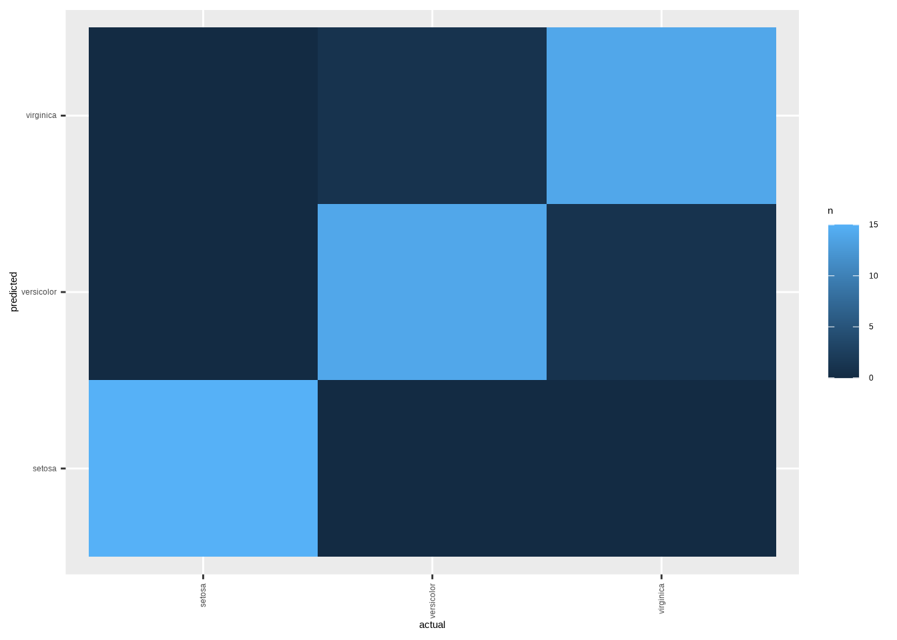
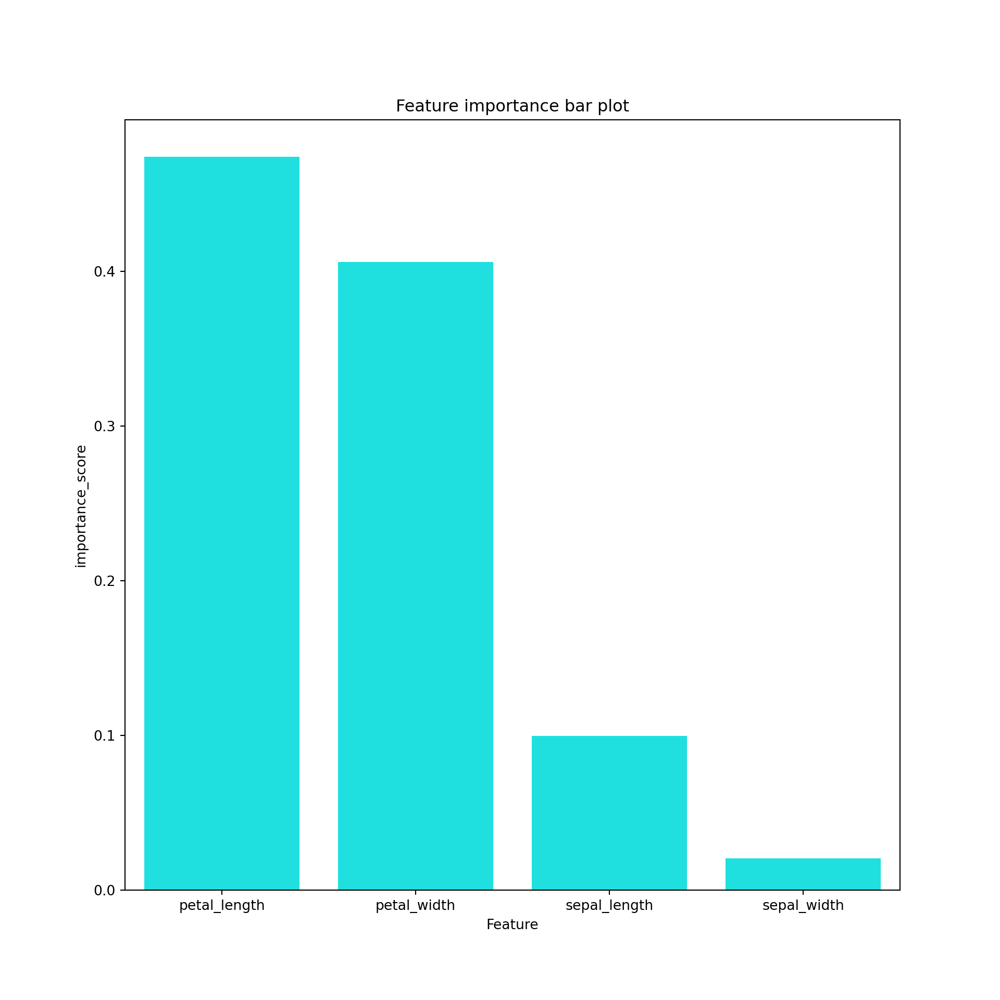
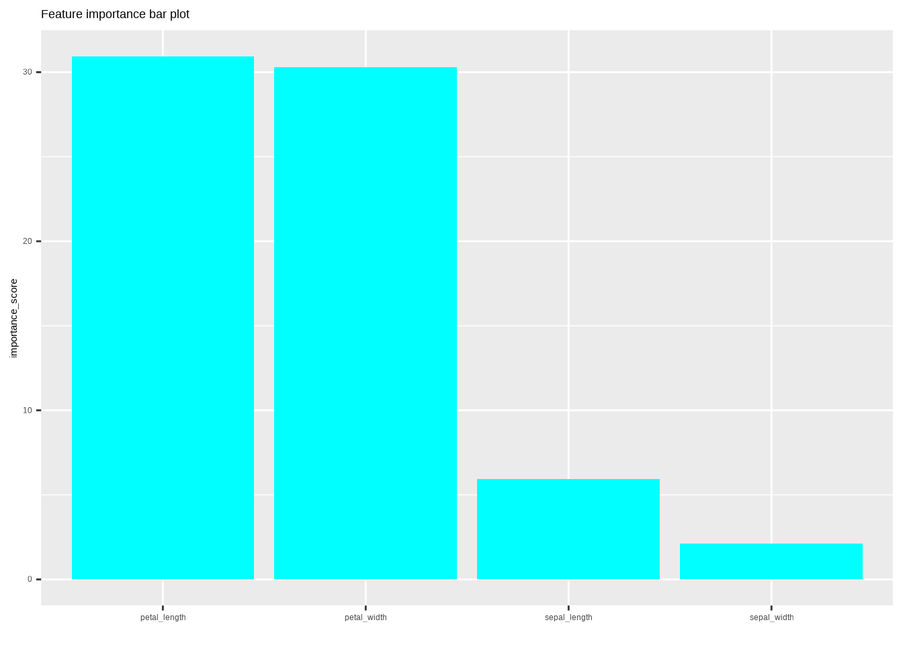

Random forest classifier
An introduction to one of the most efficient algorithms for classification.

Parnian Jahangiri Rad
Parnian Jahangiri Rad
Instructions:
intro to data
This famous iris dataset gives the measurements in centimeters of the variables sepal length and width and petal length and width, respectively, for 150 flowers from each of 3 species of iris. The species are Iris setosa, versicolor, and virginica.
iris is a data frame with 150 cases (rows) and 5 variables (columns) named :
- Sepal_Length
- Sepal_Width
- Petal_Length
- Petal_Width
- Species
An important part of supervised machine learning is Classification:finding out that what class an observation belongs to.Random forest classifier is one of the most efficient algorithms in classification.(There is also the Random forest regressor but it is not the topic of this Dotto).
janitor package:
Here, we use janitor package ,clean_names() function to clean data frame names.
intro to data
This famous iris dataset gives the measurements in centimeters of the variables sepal length and width and petal length and width, respectively, for 150 flowers from each of 3 species of iris. The species are Iris setosa, versicolor, and virginica.
iris is a data frame with 150 cases (rows) and 5 variables (columns) named : - Sepal_Length
- Sepal_Width
- Petal_Length
- Petal_Width
- Species
An important part of supervised machine learning is Classification:finding out that what class an observation belongs to.Random forest classifier is one of the most efficient algorithms in classification.(There is also the Random forest regressor but it is not the topic of this Dotto).
janitor package:
Here, we use janitor package ,clean_names() function to clean data frame names.
Codes:
library(tidyverse)
library(janitor)
data_iris <- iris %>% clean_names()
head(data_iris , 5)import seaborn as sns
import matplotlib.pyplot as plt
import pandas as pd
import janitor
row_iris = sns.load_dataset("iris")
data_iris = row_iris.clean_names()
data_iris.head(5)Results:
| sepal_length | sepal_width | petal_length | petal_width | species |
|---|---|---|---|---|
| 5.1 | 3.5 | 1.4 | 0.2 | setosa |
| 4.9 | 3.0 | 1.4 | 0.2 | setosa |
| 4.7 | 3.2 | 1.3 | 0.2 | setosa |
| 4.6 | 3.1 | 1.5 | 0.2 | setosa |
| 5.0 | 3.6 | 1.4 | 0.2 | setosa |
## sepal_length sepal_width petal_length petal_width species
## 0 5.1 3.5 1.4 0.2 setosa
## 1 4.9 3.0 1.4 0.2 setosa
## 2 4.7 3.2 1.3 0.2 setosa
## 3 4.6 3.1 1.5 0.2 setosa
## 4 5.0 3.6 1.4 0.2 setosaInstructions:
decision tree classifier
A decision tree is the building block of a random forest model.In other words , a random forest builds many trees and predicts by using means of decision trees predictions.
We can consider decision tree as a binary tree that splits dataset into different categories in case of a classification problem.
A decision tree has 2 types of nodes:
- decision nodes: contains a yes/no question to split data.
- leaf nodes: contains the predicted class of the data.
In R ,we use tree() function from tree package to implement our decision tree.
As there are so many possible splitting conditions ,now the main question is that How th choose conditions that enable our model to make predictions with highest accuracy?
decision tree classifier
A decision tree is the building block of a random forest model.In other words , a random forest builds many trees and predicts by using means of decision trees predictions.
We can consider decision tree as a binary tree that splits dataset into different categories in case of a classification problem.
A decision tree has 2 types of nodes:
- decision nodes: contains a yes/no question to split data.
- leaf nodes: contains the predicted class of the data.
We can implement decision tree (and random forest) using Scikit_Learn library in python.
As there are so many possible splitting conditions ,now the main question is that How th choose conditions that enable our model to make predictions with highest accuracy?
Codes:
library(tree)
library(caTools)
#splitting dataset
set.seed(78)
sample <- sample.split(data_iris$species, SplitRatio = 0.7)
train_data <- subset(data_iris, sample == TRUE)
test_data <- subset(data_iris, sample == FALSE)
#build model
decision_tree_model <- tree(species~. , data = train_data)
decision_tree_test_prediction <- predict(decision_tree_model, test_data, type = "class")
summary(decision_tree_model)from sklearn.tree import DecisionTreeClassifier
from sklearn.model_selection import train_test_split
import numpy as np
np.random.seed(78)
iris_features = ['sepal_length' ,
'sepal_width' ,
'petal_length',
'petal_width' ]
X = data_iris[iris_features]
y = data_iris.species
train_X, test_X, train_y, test_y = train_test_split(X, y,test_size=0.3)
#build decision tree model
decision_tree_classifier_model = DecisionTreeClassifier(max_depth = 4)
decision_tree_classifier_model.fit(train_X , train_y)
decision_tree_predict = decision_tree_classifier_model.predict(test_X)Results:
##
## Classification tree:
## tree(formula = species ~ ., data = train_data)
## Variables actually used in tree construction:
## [1] "petal_length" "petal_width"
## Number of terminal nodes: 5
## Residual mean deviance: 0.1173 = 11.73 / 100
## Misclassification error rate: 0.02857 = 3 / 105## DecisionTreeClassifier(max_depth=4)Instructions:
Different approaches for splitting decision tree
Gini impurity :
is a measurement that shows the probability of an incorrect classification of a randomly chosen datapoint in our dataset, when it was randomly classified according to the distribution of class labels from the dataset.
We can compute gini impurity of node n using this formula:
\(I_{G}(n) = 1-\sum_{i=1}^{J} (p_{i})^2\)
- J : number of all classes(in our dataset ,
Jis 3).
- \(p_{i}\) : fraction of items labeled with class
iin the set of datapoints in noden.
The lowest (and best) value for gini impurity is 0.It happens when all elements of the node belong to the same class.
random forest will choose the split that minimizes the gini impurity.
entropy:
is a measurment that shows how mixed the column is.
Consider a binary classification that target column can get values yes and no. if target column has equal amounts of yess and nos , then entropy will be equal to 1, which is the highest value for entropy.We can compute entropy using this formula:
\(-\sum_{i=1}^{c} p(x_{i}) log_{2}p(x_{i})\)
- c : number of classes(in our case , c is 3).
- \(p_{i}\) : probability of class
i.
decision tree will choose the split that minimizes the entropy.
information gain:
measures reduction in entropy by splitting dataset on values of column we are testing.
In other words , the higher the information gain is , the more we have reduced entropy.
We can compute information gain using this formula:
\(IG(T,A) = Entropy(T) - \sum_{v \in A} \frac{T_{v}}{T} . Entropy(T_{v})\)
-T : Target column
-A : the column we are testing
-v : each value in A.
decision tree will choose the split that maximizes the information gain.
In this dot,we want to calculate the entropy of species column of our dataset, using entropy() function from entropy package.
Different approaches for splitting decision tree
Gini impurity :
is a measurement that shows the probability of an incorrect classification of a randomly chosen datapoint in our dataset, when it was randomly classified according to the distribution of class labels from the dataset.
We can compute gini impurity of node n using this formula:
\(I_{G}(n) = 1-\sum_{i=1}^{J} (p_{i})^2\)
- J : number of all classes(in our dataset ,
Jis 3).
- \(p_{i}\) : probability of class
iin noden.
The lowest (and best) value for gini impurity is 0.It happens when all elements of the node belong to the same class.
decision tree will choose the split that minimizes the gini impurity.
entropy:
is a measurment that shows how mixed the column is.
Consider a binary classification that target column can get values yes and no. if target column has equal amounts of yess and nos , then entropy will be equal to 1, which is the highest value for entropy.We can compute entropy using this formula:
\(-\sum_{i=1}^{c} p(x_{i}) log_{2}p(x_{i})\)
- c : number of classes(in our case , c is 3).
- \(p_{i}\) : probability of class
i.
decision tree will choose the split that minimizes the entropy.
information gain:
measures reduction in entropy by splitting dataset on values of column we are testing.
In other words , the higher the information gain is , the more we have reduced entropy.
We can compute information gain using this formula:
\(IG(T,A) = Entropy(T) - \sum_{v \in A} \frac{T_{v}}{T} . Entropy(T_{v})\)
-T : Target column
-A : the column we are testing
-v : each value in A.
decision tree will choose the split that maximizes the information gain.
In this dot,we want to calculate the entropy of species column of our dataset, using entropy() function from scipy package.
Codes:
library(entropy)
counts <- table(data_iris$species) / length(data_iris$species)
species_entropy <- format(round(entropy(counts) ,
2) ,
nsmall = 2)
print(species_entropy)from scipy.stats import entropy
counts = data_iris.species.value_counts()
species_entropy = entropy(counts)
print("species entropy is : {:.2f}".format(species_entropy))Results:
## [1] "1.10"## species entropy is : 1.10Instructions:
Random forest classifier
Random forest is one of the most commonly used algorithms in data science.
Random forest is an ensemble model,which means more than one model is built in the process to make the prediction.
In other words , random forest is made up by many decision trees that can vary in depth.
It shows that this algorithm uses different subsets of data to built each decision tree , and different subset of features to split nodes.
This randomness improves the performance of the model output.
We use randomForest library to implement our random forest model.
By default, the number of decision trees in the forest is 500 and the number of features used as potential candidates for each split is 3.
Random forest classifier
Random forest is one of the most commonly used algorithms in data science.
Random forest is an ensemble model,which means more than one model is built in the process to make the prediction.
In other words , random forest is made up by many decision trees that can vary in depth.
It shows that this algorithm uses different subsets of data to built each decision tree , and different subset of features to split nodes.
This randomness improves the performance of the model output.
Codes:
library(randomForest)
set.seed(78)
randomForest_model <- randomForest(species ~. ,
data = train_data)
randomForest_predict <- predict(randomForest_model ,
newdata = test_data)
rm_pred <- predict(randomForest_model ,
newdata = test_data)from sklearn.ensemble import RandomForestClassifier
np.random.seed(78)
#build random forest model
randomForest_model = RandomForestClassifier(n_estimators = 100)
randomForest_model.fit(train_X , train_y)
randomForest_predict = randomForest_model.predict(test_X)Results:
## RandomForestClassifier()Instructions:
Decision tree vs random forest
Decision tree is easy to implement and has high performance on classification problems.It is also faster that random forest to train.However , It is prone to overfitting.
Overfitting happens when our model is very flexible and perfectly matches training dataset , but does not match well in test dataset.
decision tree can have high variance , which means that small change in data can result in a large change in stucture of tree , and also on model predictions.An easy way to prevent overfitting is setting a limitation for max_depth of the tree.
However , random forest builds many decision trees and uses the average of all predictions to classify data , so it is unlikely that random forest overfits to the data.
Decision tree vs random forest
Decision tree is easy to implement and has high performance on classification problems.It is also faster that random forest to train.However , It is prone to overfitting.
Overfitting happens when our model is very flexible and perfectly matches training dataset , but does not match well in test dataset.
decision tree can have high variance , which means that small change in data can result in a large change in stucture of tree , and also on model predictions.An easy way to prevent overfitting is setting a limitation for max_depth of the tree.
However , random forest builds many decision trees and uses the average of all predictions to classify data , so it is unlikely that random forest overfits to the data.
Codes:
#decision tree accuracy on test data
decision_tree_accuracy <- mean(decision_tree_test_prediction == test_data$species)
#round accuracy to 2 decimal places
decision_tree_accuracy <- format(round(decision_tree_accuracy ,
2 ) ,
nsmall = 2)
print(decision_tree_accuracy)
#random forest accuracy on test_data
randomForest_accuracy <- mean(rm_pred == test_data$species)
#round accuracy to 2 decimal places
randomForest_accuracy <- format(round(randomForest_accuracy ,
2 ) ,
nsmall = 2)
print(randomForest_accuracy)from sklearn.metrics import accuracy_score
print("decision tree accuracy: {:.2f}".format(accuracy_score(test_y , decision_tree_predict)))
print("random forest accuracy : {:.2f}".format(accuracy_score(test_y , randomForest_predict)))Results:
## [1] "0.93"## [1] "0.96"## decision tree accuracy: 0.93## random forest accuracy : 0.96Instructions:
Visualizing random forest result with confusion matrix
confusion matrix is used to measure the performance of a calssification algorithm. there are 4 possible output types for confusion matrix:
- True Positivi(TP) : Model predicts that a record belongs to a specific class , and the prediction is true.
- True Negative(TN) : Model predicts that a record does not belong to a specific class , and the prediction is true.
- False Positive(FP) : Model predicts that a record belongs to a specific class , but it actually is not.This type of error is called Type 1 error.
- False Negative(FN) : Model predicts that a record does not belong to a specific class, but it actually is.This type of error is called Type 2 error.
In this dot , we will visualize confusion matrix of our random forest model.
Visualizing random forest result with confusion matrix
confusion matrix is used to measure the performance of a calssification algorithm. there are 4 possible output types for confusion matrix:
- True Positivi(TP) : Model predicts that a record belongs to a specific class , and the prediction is true.
- True Negative(TN) : Model predicts that a record does not belong to a specific class , and the prediction is true.
- False Positive(FP) : Model predicts that a record belongs to a specific class , but it actually is not.This type of error is called Type 1 error.
- False Negative(FN) : Model predicts that a record does not belong to a specific class, but it actually is.This type of error is called Type 2 error.
In this dot , we will visualize confusion matrix of our random forest model.
Codes:
#confusion matrix
cm <- as_data_frame(table(predicted = rm_pred , actual = test_data$species))
#plot confusion matrix
ggplot(data = cm ,aes(x = actual , y = predicted)) +
geom_tile(aes(fill = n)) +
theme(axis.text.x = element_text(
angle = 90,
vjust = 0.5,
hjust = 1
)) from sklearn.metrics import confusion_matrix
ConfusionMatrix= confusion_matrix(test_y, randomForest_predict , labels=np.unique(y))
#plot confusionMatrix
cm = pd.DataFrame(ConfusionMatrix, index=np.unique(y), columns=np.unique(y))
cm.index.name = 'Actual'
cm.columns.name = 'Predicted'
fig, ax = plt.subplots(figsize=(10 , 10))
sns.heatmap(cm,annot = True, fmt='', ax=ax)
plt.show()Results:

## <matplotlib.axes._subplots.AxesSubplot object at 0x7f3fda91d0b8>
Instructions:
Feature importance
For calculating feature importance score of each feature,we use importance() function from randomForest package.This function calculates feature importance of each column using MeanDecreaseGini.
Feature importance
For calculating feature importance score of each feature, we use sum of the reductions in gini impurity of all nodes that are split on the feature.
Codes:
#get a list of columns
Features <- colnames(data_iris)
#drop target column
Features <- Features[-length(Features)]
importance_scores <- as.vector(importance(randomForest_model))
#create feature importance data frame
FI <- data.frame(feature = Features , importance_score = importance_scores) %>%
arrange(desc(importance_score))
ggplot(data = FI ,
aes(x = reorder(feature , - importance_score) ,
y = importance_score)) +
ggtitle("Feature importance bar plot") +
xlab("") +
geom_bar(stat = "identity" ,
fill = "cyan")FI = pd.DataFrame({'Feature' : list(train_X.columns) , 'importance_score' : randomForest_model.feature_importances_}).sort_values('importance_score', ascending=False)
#create bar plot
plt.clf()
sns.barplot(data = FI, x = 'Feature' , y = 'importance_score' , color = 'cyan')
plt.title('Feature importance bar plot')
plt.show()Results:

## <matplotlib.axes._subplots.AxesSubplot object at 0x7f3fd40147f0>## Text(0.5, 1.0, 'Feature importance bar plot')Instructions:
Generate random forest model on selected features
In this dot ,we drop the least important feature(sepal_width) from model,to check its effect on accuracy.
We see that the accuracy is not changed,so it has no effect on accuracy and we can drop it from model.
Generate random forest model on selected features
In this dot ,we drop the least important feature(sepal_width) from model,to check its effect on accuracy.
We see that the accuracy is not changed,so it has no effect on accuracy and we can drop it from model.
Codes:
set.seed(78)
#remove 'sepal_width' from our dataset
data_iris_2 <- data_iris %>%
select(petal_width ,
petal_length ,
sepal_length)
sample_2 <- sample.split(data_iris$species, SplitRatio = 0.7)
train_data_2 <- subset(data_iris, sample == TRUE)
test_data_2 <- subset(data_iris, sample == FALSE)
randomForest_model <- randomForest(species ~. ,
data = train_data_2)
randomForest_predict <- predict(randomForest_model ,
newdata = test_data_2)
rm_pred_2 <- predict(randomForest_model , newdata = test_data)
#accuracy of new model
randomForest_2_accuracy <- mean(rm_pred_2 == test_data_2$species)
randomForest_2_accuracy <- format(round(randomForest_2_accuracy ,
2) ,
nsmall = 2)
print(randomForest_2_accuracy)np.random.seed(78)
#remove feature 'sepal_width'
X2 = data_iris[['petal_length', 'petal_width' ,'sepal_length']]
y2 = data_iris['species']
train_X2 , test_X2 , train_y2 , test_y2 = train_test_split(X2 , y2 , test_size = 0.3)
#build a new random forest model with selected features
randomForest_model2 = RandomForestClassifier(n_estimators=100)
randomForest_model2.fit(train_X2 , train_y2)
randomForest2_predict = randomForest_model2.predict(test_X2)
print("random forest2 accuracy : {:.2f}".format(accuracy_score(test_y2 , randomForest2_predict)))Results:
## [1] "0.96"## RandomForestClassifier()## random forest2 accuracy : 0.96